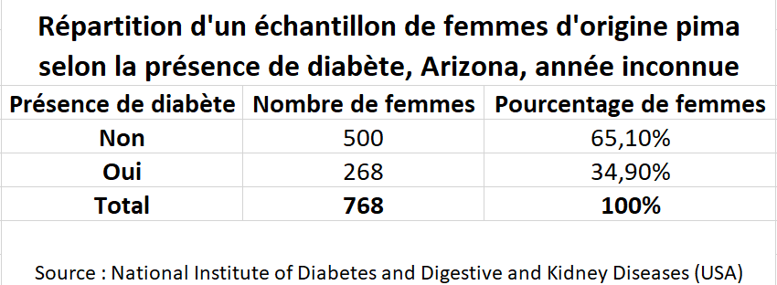

Dans ce laboratoire, on cherche à représenter la répartition du nombre de femmes d’origine pima vivant en Arizona qui sont atteintes du diabète, ainsi que leur répartition selon leur niveau d’obésité, tel que qualifié par Santé Canada en fonction de l’indice de masse corporelle.
Pour cela, on utilise les variables Atteint et Obésité, dont les tableaux croisés dynamiques ont été construits respectivement au Laboratoire 1 et au pré laboratoire précédent. On rappelle que pour la variable Atteint, le code \(0\) signifie absence de diabète et le code \(1\) signifie que la femme est atteinte du diabète. Pour la variable Obésité, l’échelle de \(1\) à \(6\) se traduit par:
Poids insuffisant;
Poids normal;
Excès de poids;
Obésité Classe I;
Obésité Classe II;
Obésité Classe III.
Dans ce laboratoire, on introduit la notion de mise en forme d’un tableau à des fins de publication, la création d’un diagramme circulaire et d’un diagramme à bandes, ainsi que la mise en forme appropriée pour ces deux éléments graphiques.
Sous-section2.2.1Le tableau croisé dynamique et le tableau pour publication
Le tableau croisé dynamique construit par Excel à la fin du laboratoire 1 (répartition des femmes selon la présence de diabète) n’est pas adéquat pour publier comme source d’information. Il est nécessaire de préciser les étiquettes des lignes et des colonnes, d’ajouter un titre significatif ainsi que quelques éléments. Voici une procédure pour construire un tableau plus propice au partage des informations.
Dans la feuille Étude Atteint, on sélectionne une cellule pour débuter le tableau, par exemple H8 dans la figure Figure 2.2.1. On appuie ensuite sur =, on sélectionne la plage du tableau croisé dynamique correspondant aux données et on appuie sur Enter.
Il est également possible de faire la combinaison Ctrl+C sur la plage des données du tableau croisé dynamique et de faire un collage spécial à l’endroit souhaité. Pour cela, on peut faire la combinaison Ctrl+V, cliquer sur l’icone de collage dans le coin inférieur bas et sélectionner Coller le lien (N).
Dans tous les cas, il est possible qu’il faille changer le format de la cellule pour Pourcentage (voir Format de cellule en pourcentage). On s’assure de garder deux chiffres significatifs après la virgule. L’animation ci-dessous permet de voir en trois étapes à quoi ressemble la progression de ces étapes.
Figure2.2.1.Création du tableau pour présentation - première méthodeFigure2.2.2.Création du tableau pour présentation - deuxième méthode
Sous-section2.2.2Mise en forme tableau
Une fois les données extraites du tableau croisé dynamique, on ajoute les étiquettes de colonnes et de lignes, le titre du tableau et la source des données. Pour le moment, on ne se soucie pas de la mise en forme de ces éléments. Dans un premier temps, pour le tableau concernant la variable Atteint du diabète, les étapes qui suivent devraient mener à un tableau de quatre lignes et trois colonnes. Liste2.2.3.Mise en forme du tableau pour publication
On ajoute une colonne appelée “Présence du diabète” à gauche dont les lignes sont, du haut vers le bas : “Non”,“Oui”,“Total”. La colonne “Présence du diabète” se trouve donc dans la colonne G de la feuille de calcul.
On ajoute le titre des autres colonnes, de gauche à droite : “Nombre de femmes”, “Pourcentage de femmes”. Élargir les colonnes de manière à ce que le tout soit lisible.
Dans la dernière ligne, on a le total du nombre de femmes sous chaque colonne. Sous la colonne Pourcentage de femmes à la ligne Total, on s’assure qu’il est toujours écrit \(100\%\text{,}\) même si les nombres dans la colonne pourraient ne pas additionner à \(100\%\) en raison d’erreur d’arrondi. Dans de tel cas, on l’indiquera sous le tableau à l’aide de la note : “En raison de l’arrondissement des pourcentage, le total pourrait ne pas être exactement de \(100,00\%\text{.}\)”
Sous le tableau, on inscrit la source des données. Dans le cas de cette étude, la source est donnée dans Section 1.1. La mention “Source : National Institute of Diabetes and Digestive and Kidney Diseases (USA)” doit apparaitre sous chacun des tableaux et graphiques créés pour publication.
On titre le tableau. Le titre aura généralement la forme Répartition d’un échantillon (ou d’une population) de [unités statistiques] selon [la variable], [le lieu], [période ou date].
La figure ci-dessous illustre le tableau pour publication une fois toutes les étapes effectuées.

Figure2.2.4.Le tableau pour publication - après la mise en forme
Répéter les étapes ci-dessus avec le tableau croisé dynamique généré lors du pré laboratoire pour la variable Obésité dans la feuille Étude Obésité.
Ces tableaux sont appelés tableau de fréquences de la variable étudiée. S’il n’y a que la colonne du nombre d’individus, on parle alors de tableau de fréquences absolues et s’il n’y a que la colonne des pourcentages, on dit tableau de fréquences relatives.
Habituellement, le titre, les en-têtes de colonne, ainsi que le contenu de la ligne «Total» ont une mise en forme particulière, par exemple en gras.
Sous-section2.2.3Graphiques
Un tableau est une excellente manière de rassembler l’information d’une variable qualitative, mais il est souvent autant sinon davantage utile d’illustrer la répartition des unités statistiques de manière graphique. Pour une variable qualitative, il existe deux types de graphiques principaux: le diagramme circulaire et le diagramme à bandes. Dans le second cas, les bandes peuvent être horizontales ou verticales, mais si la variable est ordinale, on préfère le diagramme à bandes verticales.
On construit le diagramme circulaire associé à la variable Atteint. On choisit de faire la répartition en pourcentage des effectifs.
Dans le tableau de fréquences de la feuille Étude Atteint, sélectionner les modalités de la variable aux cellules G8:G9 et, en maintenant la touche Ctrl enfoncée, les effectifs relatifs aux cellules I8:I9.
Sous l’onglet Insertion, cliquer sur le bouton correspondant au diagramme circulaire dans le ruban. Voir la figure ci-dessous.
Sous Secteur 2D, cliquer sur le premier type de graphique à gauche, appellé Secteur. Déplacer le graphique au besoin.
La figure Figure 2.2.5 illustre les étapes précédentes sous forme d’animation.
On peut sélectionner un style prédéfini sous l’onglet création de graphique (apparaissant lorsque le graphique est sélectionné, voir la figure Figure 2.2.6) ou encore peaufiner les éléments graphiques selon ce qui est attendu. Toutefois, en sciences, l’allure esthétique du graphique ne devrait pas prendre le dessus sur l’information transmise. On préférera un style relativement neutre sans trop de fioritures. Le graphique circulaire doit néanmoins contenir les éléments suivants:
Un titre représentatif, typiquement de la forme Répartition d’un échantillon (ou d’une population) de [unités statistiques] selon [la variable], [le lieu], [période ou date];
Une légende, pour distinguer les différents secteurs;
Les étiquettes correspondant aux pourcentages ou au nombre d’effectifs sur le graphique, pour une information précise;
La source, lorsque pertinent, dans le bas du graphique.
Si l’un ou plusieurs de ces éléments est manquant, on peut, lorsque le graphique est sélectionné, cliquer sur l’onglet Création de graphique et cliquer sur le bouton Ajouter un élément graphique situé dans la partie gauche du ruban. Il est aussi possible de cliquer sur le petit symbole de croix en haut à droite du graphique. La figure Figure 2.2.7 illustre ces deux options.
Figure2.2.5.L’insertion d’un diagramme circulaireFigure2.2.6.Les styles prédéfinis d’Excel
Figure2.2.7.Ajout d’un élément graphique: deux options
On construit maintenant le diagramme à bandes pour la variable Obésité. Comme la variable est qualitative à échelle ordinale, on choisit les bandes verticales. Cette fois, on choisit d’utiliser les effectifs absolus.
Dans le tableau de fréquences de la feuille Étude Obésité, sélectionner les modalités de la variable et, en maintenant la touche Ctrl enfoncée, les effectifs absolus.
Sous l’onglet Insertion, cliquer sur le bouton correspondant à l’histogramme. Voir la figure Figure 2.2.8 ci-dessous.
Sous Histogramme 2D, cliquer sur le premier type de graphique à gauche, appellé Histogramme groupé, pour un diagramme à bandes verticales.
Sous Barres 2D, cliquer sur le premier type de graphique à gauche, appellé Barres groupées, pour un diagramme à bandes horizontales.
On peut sélectionner un style prédéfini ou encore peaufiner les éléments graphiques selon ce qui est attendu. Toutefois, en sciences, l’allure esthétique du graphique ne devrait pas prendre le dessus sur l’information transmise. On préférera un style relativement neutre sans trop de fioritures. Le diagramme à bandes doit néanmoins contenir les éléments suivants:
Un titre représentatif, typiquement de la forme Répartition d’un échantillon (ou d’une population) de [unités statistiques] selon [la variable], [le lieu], [période ou date];
Des titres significatifs pour les axes;
Le nom des modalités identifié clairement, sous l’axe (pour un graphique à bandes verticales), à la gauche (pour un graphique à bandes horizontales) ou encore dans une légende (pour les deux types de graphiques).
L’axe des effectifs comprend une graduation bien faite. Une note est ajoutée s’il y a eu coupure de l’axe pour sauter certaines valeurs.
Les étiquettes correspondant aux pourcentages ou au nombre d’effectifs sur le graphique, pour une information précise.
La source, lorsque pertinent, dans le bas du graphique.
Si l’un ou plusieurs de ces éléments est manquant, on peut, lorsque le graphique est sélectionné, cliquer sur l’onglet Création de graphique et cliquer sur le bouton Ajouter un élément graphique. Il est aussi possible de cliquer sur le petit symbole de croix en haut à droite du graphique. La figure Figure 2.2.7 illustre ces deux options.
Figure2.2.8.Insertion d’un diagramme à bandesFigure2.2.9.Diagramme à bandes verticales